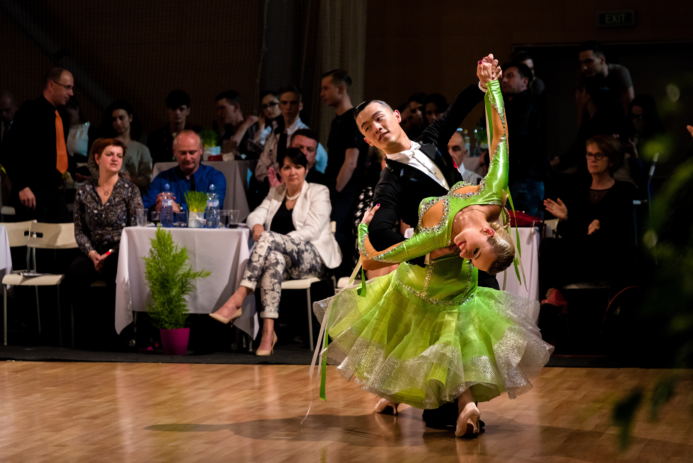

Klassich werden Langsamer Walzer, Tango, Wiener Walzer, Foxtrott, Slowfox und Quickstep
unter dem Begriff Standardtanz zusammengefasst. Kennzeichend für diese Formen von Gesellschaftstanz
ist, dass sich die Tänzer paarweise unterständiger Körperkontakt durch den Raum bewegen.
Die Schrittfolgen und Tanzpositionen sind dabei vorgegeben. Einer der Tänzer
führt den anderen. Klassisch akzeptiert der Mann, die Rolle des Führenden.

Bis auf die Walzer werden die Tänze im 4/4-Takt getanzt. Die Walzer werden beide
im 3/4-Takt getanzt. Langsamer Walzer, Tango und Slowfox sind im Tempo ähnlich,
währe es im Wiener Walzer und Quickstep in etwa so vielen Takten in der Minute gibt.
Neben ihrer Bedeutung als Gesellschaftstanz bilden die fünf Tänze den Turniertanz.
Hier gibt es unterschiedliche Leistungs- und Altersklassen. Die Tänze werden dabei
in der obigen Reihenfolge getanzt.
Anfänger: Di/Do/Sa 1600-1730
Fortgeschritten: Di/Do/Sa 1730-1900
Kursgebühr: Auf Absprache.
Ihr seit jederzeit herzlich Willkommen an einer der Termine zum schnuppern vorbei zu kommen. Bringt Kleidung mit in der ihr euch frei bewegen könnt.